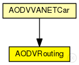

This documentation is released under the Creative Commons license
This documentation is released under the Creative Commons licenseAd hoc On-Demand Distance Vector Routing Protocol module.
The Ad hoc On-Demand Distance Vector (AODV) routing protocol is intended for use by mobile nodes in an ad hoc network. It offers quick adaptation to dynamic link conditions, low processing and memory overhead, low network utilization, and determines unicast routes to destinations within the ad hoc network.
This routing protocol communicates over UDP and used in ~AODVRouter nodes as a routing submodule. ~AODVRouter is just a ~WirelessHost extended with ~AODVRouting submodule.
This implementation is based on RFC 3561. For more information, you may refer to the following link: https://tools.ietf.org/html/rfc3561.html.
The following diagram shows usage relationships between types. Unresolved types are missing from the diagram. Click here to see the full picture.
The following diagram shows inheritance relationships for this type. Unresolved types are missing from the diagram. Click here to see the full picture.
| Name | Type | Description |
|---|---|---|
| AODVVANETCar | compound module | (no description) |
| Name | Type | Default value | Description |
|---|---|---|---|
| networkProtocolModule | string | "^.networkLayer.ip" | |
| askGratuitousRREP | bool | false |
see RFC 3561: 6.6.3 |
| useHelloMessages | bool | false |
see RFC 3561: 6.9 |
| useLocalRepair | bool | false |
see RFC 3561: 6.12 *not implemented yet* |
| udpPort | int | 654 | |
| maxPeriodicJitter | double | helloInterval / 4 |
it MUST NOT be negative; it MUST NOT be greater than MESSAGE_INTERVAL/2; it SHOULD NOT be greater than MESSAGE_INTERVAL/4. |
| periodicJitter | double | uniform(0s, maxPeriodicJitter) |
jitter for externally triggered message generation and message forwarding |
| maxJitter | double | 5ms |
RFC 5148: need more revise: As well as the decision as to whether to use jitter being dependent on the medium access control and lower layers, the selection of the MAXJITTER parameter SHOULD be appropriate to those mechanisms. |
| jitter | double | uniform(0ms, maxJitter) |
jitter for broadcasts |
| helloInterval | double | 1s |
every helloInterval seconds a node broadcasts Hello messages (if it is necessary) |
| allowedHelloLoss | int | 2 |
allowedHelloLoss * helloInterval is the lifetime value for Hello messages |
| activeRouteTimeout | double | 3s |
the timeout value for cached routes If Hello messages are used, then the ACTIVE_ROUTE_TIMEOUT parameter value MUST be more than the value (ALLOWED_HELLO_LOSS * HELLO_INTERVAL). |
| netDiameter | int | 35 |
the maximum possible number of hops between two nodes in the network |
| nodeTraversalTime | double | 0.04s |
an estimation of the average one-hop traversal time |
| rerrRatelimit | int | 10 |
maximum number of RERR messages that the AODV may originate in 1s. |
| rreqRetries | int | 2 |
specifies the number of times AODV will repeat an expanded ring search for a destination |
| rreqRatelimit | int | 10 |
maximum number of RREQ messages that the AODV may originate in 1s. |
| timeoutBuffer | int | 2 |
plus time to wait for a delayed RREP (due to congestion) (to omit this buffer set it to 0) |
| ttlStart | int | 2 |
specifies the TTL value when initiating a route request |
| ttlIncrement | int | 2 |
specifies the value by which the TTL will be incremented each time a RREQ is retransmitted |
| ttlThreshold | int | 7 |
the maximum value of TTL over which NET_DIAMETER value will be used to broadcast any RREQ |
| localAddTTL | int | 2 |
it is used by the formula which calculates the initial TTL of the RREQ for a local repair |
| myRouteTimeout | double | 2 * activeRouteTimeout |
the value of the lifetime field that a destination node places in RREPs |
| deletePeriod | double | 5 * max(activeRouteTimeout, helloInterval) |
the time after which an expired route is deleted |
| blacklistTimeout | double | rreqRetries * netTraversalTime |
the time after which a blacklisted node is removed from the blacklist |
| netTraversalTime | double | 2 * nodeTraversalTime * netDiameter |
an estimation of the traversal time for the complete network |
| nextHopWait | double | nodeTraversalTime + 0.01s |
timeout for a RREP-ACK |
| pathDiscoveryTime | double | 2 * netTraversalTime |
buffer timeout for each broadcasted RREQ message |
| Name | Value | Description |
|---|---|---|
| display | i=block/network2 |
| Name | Direction | Size | Description |
|---|---|---|---|
| ipIn | input | ||
| ipOut | output |
// // Ad hoc On-Demand Distance Vector Routing Protocol module. // // The Ad hoc On-Demand Distance Vector (AODV) routing protocol is // intended for use by mobile nodes in an ad hoc network. It offers // quick adaptation to dynamic link conditions, low processing and // memory overhead, low network utilization, and determines unicast // routes to destinations within the ad hoc network. // // This routing protocol communicates over UDP and used in ~AODVRouter // nodes as a routing submodule. ~AODVRouter is just a ~WirelessHost // extended with ~AODVRouting submodule. // // This implementation is based on RFC 3561. For more information, you may // refer to the following link: https://tools.ietf.org/html/rfc3561.html. // simple AODVRouting { parameters: @display("i=block/network2"); string networkProtocolModule = default("^.networkLayer.ip"); bool askGratuitousRREP = default(false); // see RFC 3561: 6.6.3 bool useHelloMessages = default(false); // see RFC 3561: 6.9 bool useLocalRepair = default(false); // see RFC 3561: 6.12 *not implemented yet* int udpPort = default(654); double maxPeriodicJitter @unit("s") = default(helloInterval / 4); // it MUST NOT be negative; it MUST NOT be greater than MESSAGE_INTERVAL/2; it SHOULD NOT be greater than MESSAGE_INTERVAL/4. volatile double periodicJitter @unit("s") = default(uniform(0s, maxPeriodicJitter)); // jitter for externally triggered message generation and message forwarding // RFC 5148: // need more revise: As well as the decision as to whether // to use jitter being dependent on the medium access control and // lower layers, the selection of the MAXJITTER parameter SHOULD // be appropriate to those mechanisms. double maxJitter @unit("s") = default(5ms); volatile double jitter @unit("s") = default(uniform(0ms, maxJitter)); // jitter for broadcasts double helloInterval @unit("s") = default(1s); // every helloInterval seconds a node broadcasts Hello messages (if it is necessary) int allowedHelloLoss = default(2); // allowedHelloLoss * helloInterval is the lifetime value for Hello messages double activeRouteTimeout @unit("s") = default(3s); // the timeout value for cached routes If Hello messages are used, then the // ACTIVE_ROUTE_TIMEOUT parameter value MUST be more than the value // (ALLOWED_HELLO_LOSS * HELLO_INTERVAL). int netDiameter = default(35); // the maximum possible number of hops between two nodes in the network double nodeTraversalTime @unit("s") = default(0.04s); // an estimation of the average one-hop traversal time int rerrRatelimit = default(10); // maximum number of RERR messages that the AODV may originate in 1s. int rreqRetries = default(2); // specifies the number of times AODV will repeat an expanded ring search for a destination int rreqRatelimit = default(10); // maximum number of RREQ messages that the AODV may originate in 1s. int timeoutBuffer = default(2); // plus time to wait for a delayed RREP (due to congestion) (to omit this buffer set it to 0) int ttlStart = default(2); // specifies the TTL value when initiating a route request int ttlIncrement = default(2); // specifies the value by which the TTL will be incremented each time a RREQ is retransmitted int ttlThreshold = default(7); // the maximum value of TTL over which NET_DIAMETER value will be used to broadcast any RREQ int localAddTTL = default(2); // it is used by the formula which calculates the initial TTL of the RREQ for a local repair double myRouteTimeout @unit("s") = default(2 * activeRouteTimeout); // the value of the lifetime field that a destination node places in RREPs double deletePeriod @unit("s") = default(5 * max(activeRouteTimeout, helloInterval)); // the time after which an expired route is deleted double blacklistTimeout @unit("s") = default(rreqRetries * netTraversalTime); // the time after which a blacklisted node is removed from the blacklist double netTraversalTime @unit("s") = default(2 * nodeTraversalTime * netDiameter); // an estimation of the traversal time for the complete network double nextHopWait @unit("s") = default(nodeTraversalTime + 0.01s); // timeout for a RREP-ACK double pathDiscoveryTime @unit("s") = default(2 * netTraversalTime); // buffer timeout for each broadcasted RREQ message gates: input ipIn; output ipOut; }
This documentation is released under the Creative Commons license